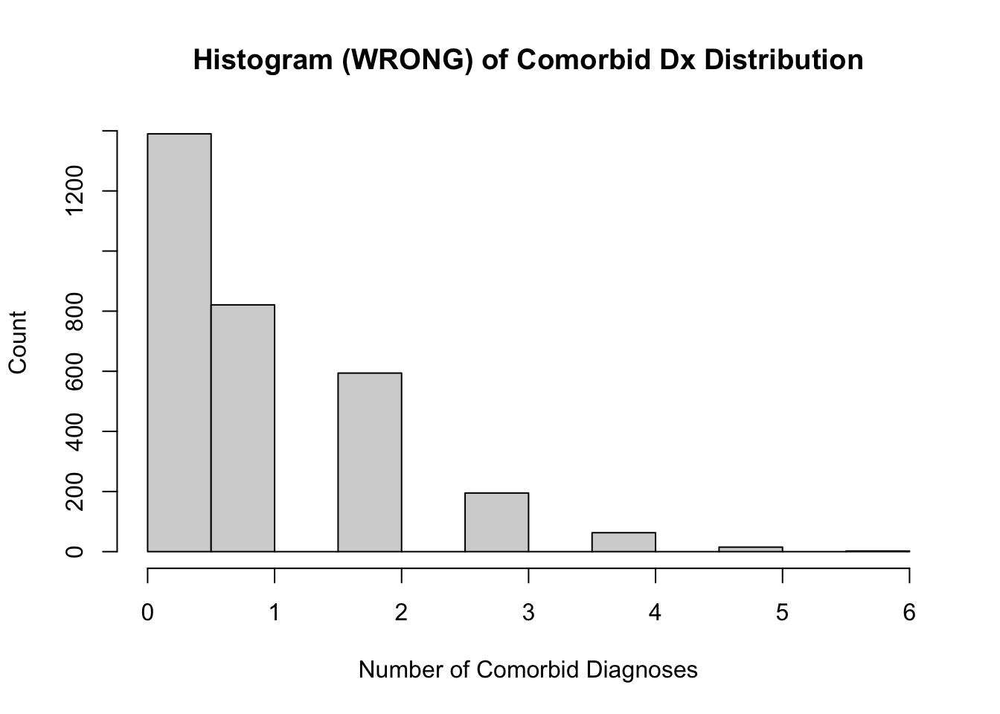

Poisson regression is commonly used when modeling count data. In this type of GLM, the counts outcome is required to follow a Poisson distribution wherein its mean is equal to its variance. A Poisson distribution, as we have learned, describes the probability of a given number of events occurring within a fixed interval. Poisson regression models are accurate but inefficient for data that are under-dispersed or over-dispersed, that is, the variance is smaller or larger than the mean. Standard error estimates are thus underestimated by Poisson regression, which results in an inflated chance of type 1 error (incorrectly rejecting a true null hypothesis). In real count data, the variance is often greater than the mean.
Instead, negative binomial regression is used to model count data when the data are over-dispersed. A binomial distribution is a distribution of the number of successes (x) in a fixed number (n) of independent Bernoulli trials. The negative binomial distribution, on the other hand, is the distribution of the number of trials (x) needed to get a fixed number of successes (x). The negative binomial regression model has a dispersion parameter, \(\theta\), to represent random error. This allows it more flexibility to model distributions that cannot follow a Poisson distribution.
Furthermore, a distribution of count data that have an attainable maximum value can not follow a Poisson distribution, whose support ranges from zero to infinity. The negative binomial distribution, with its extra \(\theta\) parameter, provides a better fit for these types of count data. If the largest actual observed values are relatively close to the largest possible value of the outcome, a negative binomial distribution should be used.
For an in-depth explanation of the theory behind the negative binomial distribution and regression model, along with examples, please read this chapter by NCSS Statistical Software.
34.1.1 Negative Binomial Regression Formula
The negative binomial regression model formula is as follows:
where: \(\theta\) is the dispersion parameter. It measures the extra variation, or dispersion, in the data that is not explained by the Poisson distribution. A small theta indicates the variance is much larger than \(\mu\). As theta increases, the variance approaches \(\mu\).
34.1.2 Assumptions of Negative Binomial GLM
Independence: Observations should be independent of one another.
Linearity: the relationship between the dependent variable and independent variables should be linear.
No Multicolinearity: Independent variables should not be highly correlated with one another.
34.1.3 Other GLMs for Count Data
A zero-inflated Poisson regression is used to model discrete (count) data that has an excess amount of zero outcomes. This model may be used to model data that are over-dispersed due to the presence of excessive zeros that are generated by a separate process from the count values.
Zero-truncated Poisson regression is used to model count data that can not contain a zero value. This model should be used if the data generating process does not allow for a zero value to occur - for example, when measuring the number of days patients spent at a hospital.
Censored regression models, such as the Tobit model, are used to model data with right- or left-censoring in the dependent variable. Censoring from the right occurs when the actual values at or above the maximum threshold are recorded as the value of that threshold. In left-censoring, values below a threshold take on the value of that threshold.
34.2 Mental Illness Example
To explore a possible relationship between mental illness and illicit drug use, we will create a negative binomial GLM using participant data from a clinical trial to predict the number of comorbid mental illnesses that clinical trial participants have been diagnosed with in addition to opioid use disorder (OUD). The data were collected during the clinical trial “CTN-0094: Individual Level Predictive Modeling of Opioid Use Disorder Treatment Outcome” and provided by the public.ctn0094data and public.ctn0094extra packages. These packages contain demographic, clinical, and drug use data on trial participants seeking treatment for OUD.
34.2.1 Install Packages
34.2.2 Data Cleaning and Exploration
psychDx_df<-psychiatric%>%# select Identifier column `who` and disease state columnsdplyr::select("who", starts_with("has_"))%>%dplyr::select(!ends_with("_dx"))%>%drop_na()head(psychDx_df)
# A tibble: 6 × 7
who has_schizophrenia has_major_dep has_bipolar has_anx_pan has_brain_damage
<int> <fct> <fct> <fct> <fct> <fct>
1 1 No No No No No
2 2 No No No No Yes
3 3 No No No No No
4 4 No Yes No Yes No
5 6 No No No No No
6 7 No No No Yes No
# ℹ 1 more variable: has_epilepsy <fct>
countComorbidDx_int<-psychDx_df%>%dplyr::select(-who)%>%# count number of psychiatric disorders per IDmutate(across(# create data frame containing `TRUE` if the value in each cell of the # columns equals "Yes" and `FALSE` otherwise .cols =has_schizophrenia:has_epilepsy, .fns =~`==`(.x, "Yes")))%>%# `rowSums(.)` sums the number of `TRUE` values in this data frame for each# row. Result is converted to integers for our new column, `nComorbidDx`.mutate(nComorbidDx =as.integer(rowSums(.)))%>%# extract column as vectorpull(nComorbidDx)# add vector of count of psychiatric disorders to dataset as a columnpsychDx_df$nComorbidDx<-countComorbidDx_int# visualize distribution of psych disorder counts (correctly, using a bar chart)ggplot(psychDx_df)+aes(nComorbidDx)+labs( title ="Bar Chart of Comorbid Dx Distribution", x ="Number of Comorbid Diagnoses", y ="Count")+geom_bar()
# visualize with a histogram (inappropriate for our count data)hist(countComorbidDx_int, main ="Histogram (WRONG) of Comorbid Dx Distribution", xlab ="Number of Comorbid Diagnoses", ylab ="Count")

Bar Chart vs. Histogram
When graphing count data, use a bar chart, not a histogram. Histograms treat data as continuous and will graph count data as if it may contain decimals.
This distribution supports using negative binomial regression because our count cannot go past 6. A normal (Poisson) binomial regression support, however, ranges from 0 to infinity, and would therefore be an inappropriate distribution to model the data with. The negative binomial model has more flexibility to model count data that has a maximum value.
We will now join our dataset with the demographics and rbs datasets from the Clinical Trials Network study CTN-0094 by the subject ID, "who", to get demographic and substance use data for each subject.
# inspect demographics, qol, and rbs datasets from CTN and join to PsychDxdata("demographics")data("rbs")# `rbs` is in long format, so pivot widerrbs_wide<-rbs%>%pivot_wider( id_cols =who, names_from =what, values_from =days)# left join by `who` to retain rows from `demographics` for all matching `who`s# in psychDx_dfdxPred_df<-left_join(psychDx_df, demographics, by ="who")%>%left_join(rbs_wide, by ="who")
# the diagnosis columns for each disease and `who` column are no longer needed# after the join and thus are removeddxPred2_df<-dxPred_df%>%dplyr::select(-(has_schizophrenia:has_epilepsy),-who)print(dxPred2_df)
# A tibble: 3,080 × 14
nComorbidDx age is_hispanic race job is_living_stable education marital
<int> <dbl> <fct> <fct> <fct> <fct> <fct> <fct>
1 0 43 No White Full … Yes More tha… Marrie…
2 1 30 No White Full … Yes More tha… Never …
3 0 23 No Black Full … Yes More tha… Never …
4 2 19 No White Stude… Yes More tha… Never …
5 0 43 No White Full … Yes HS/GED Marrie…
6 1 33 No White Part … Yes More tha… Never …
7 0 25 Yes Black Part … Yes HS/GED Never …
8 4 29 No Other Part … Yes More tha… Never …
9 2 40 No White <NA> <NA> <NA> <NA>
10 0 19 No White <NA> <NA> <NA> <NA>
# ℹ 3,070 more rows
# ℹ 6 more variables: is_male <fct>, cocaine <dbl>, heroin <dbl>,
# speedball <dbl>, opioid <dbl>, speed <dbl>
34.2.3 Predictor Selection
We will now check to see how much data are missing. A negative binomial GLM can only be built using complete rows, meaning rows with no missing values. Predictors with a high proportion of data should not be used as they would negatively impact the GLM’s fit to the data. If we use all features, we will be left with 567 out of 3080 rows with complete cases. The number of usable rows can be increased by removing incomplete predictor columns.
# check for features with lots of missing data and remove them.skim(dxPred2_df)
Data summary
Name
dxPred2_df
Number of rows
3080
Number of columns
14
_______________________
Column type frequency:
factor
7
numeric
7
________________________
Group variables
None
Variable type: factor
skim_variable
n_missing
complete_rate
ordered
n_unique
top_counts
is_hispanic
10
1.00
FALSE
2
No: 2634, Yes: 436
race
0
1.00
FALSE
4
Whi: 2318, Oth: 438, Bla: 295, Ref: 29
job
1512
0.51
FALSE
5
Ful: 842, Une: 330, Par: 299, Oth: 56
is_living_stable
1519
0.51
FALSE
2
Yes: 1500, No: 61
education
1455
0.53
FALSE
3
Mor: 676, HS/: 634, Les: 315
marital
1463
0.52
FALSE
3
Nev: 937, Sep: 368, Mar: 312
is_male
1
1.00
FALSE
2
Yes: 2041, No: 1038
Variable type: numeric
skim_variable
n_missing
complete_rate
mean
sd
p0
p25
p50
p75
p100
hist
nComorbidDx
0
1.00
0.95
1.08
0
0
1
2
6
▇▂▁▁▁
age
97
0.97
35.90
10.86
18
27
34
45
77
▇▇▆▂▁
cocaine
303
0.90
2.95
6.55
0
0
0
2
30
▇▁▁▁▁
heroin
295
0.90
17.51
13.68
0
0
26
30
30
▆▁▁▁▇
speedball
856
0.72
1.42
5.05
0
0
0
0
30
▇▁▁▁▁
opioid
524
0.83
13.38
13.39
0
0
5
30
30
▇▁▁▁▆
speed
852
0.72
1.18
4.00
0
0
0
0
30
▇▁▁▁▁
# count rows missing any data on substance usesum(is.na(dxPred2_df$cocaine)|is.na(dxPred2_df$heroin)|is.na(dxPred2_df$speedball)|is.na(dxPred2_df$opioid)|is.na(dxPred2_df$speed))
[1] 1198
If I use all features, I will be left with 567 out of 3080 rows with complete cases. I can increase the number of complete rows by removing incomplete predictor columns. The features job, is_living_stable, education, and marital from the demographics dataset are all missing data on about half of the participants (N = 3080) and should therefore be removed from the model. Furthermore, about one-third of participants are missing data on their drug usage from the rbs dataset. I will also remove speedball and speed as they are 27% missing.
We will use cor() to create a correlation matrix of the continuous independent variables to investigate possible multicolinearity.
# remove features missing > 20% of observationsdxPred3_df<-dxPred2_df%>%dplyr::select(-(job:marital),-speed,-speedball)print(dxPred3_df)
# A tibble: 3,080 × 8
nComorbidDx age is_hispanic race is_male cocaine heroin opioid
<int> <dbl> <fct> <fct> <fct> <dbl> <dbl> <dbl>
1 0 43 No White Yes 0 0 30
2 1 30 No White No 0 0 30
3 0 23 No Black No 4 30 4
4 2 19 No White Yes 0 4 30
5 0 43 No White Yes 0 0 30
6 1 33 No White No 4 4 30
7 0 25 Yes Black No 4 4 4
8 4 29 No Other No 30 30 3
9 2 40 No White No 2 30 1
10 0 19 No White Yes 1 30 0
# ℹ 3,070 more rows
# calculate Spearman correlation matrix for the continuous predictorsround(cor(dxPred3_df[, c("age", "cocaine", "heroin", "opioid")],# use only pairwise complete observations for calculating correlations use ="pairwise.complete.obs", method ="spearman"),# round to 2 digits for easy interpretation digits =2)
I will also remove opioid because it is highly correlated with heroin, which I chose to retain over opioid simply because it contains more data.
The next step is to create a pairs plot to investigate the remaining predictors and determine whether any pairs are highly correlated.
The remaining variables exhibit no strong correlations or unexpected behavior, so they will all be used in the model.
34.2.4 Negative Binomial GLM
# create negative binomial regression to predict number of comorbid diagnosesnb_mod<-MASS::glm.nb(nComorbidDx~age+is_hispanic+relevel(race, ref ="White")+is_male+cocaine*heroin, data =dxPred4_df)summary(nb_mod)
Call:
MASS::glm.nb(formula = nComorbidDx ~ age + is_hispanic + relevel(race,
ref = "White") + is_male + cocaine * heroin, data = dxPred4_df,
init.theta = 5.828534372, link = log)
Coefficients:
Estimate Std. Error z value
(Intercept) 0.2523885 0.0816969 3.089
age 0.0018235 0.0021112 0.864
is_hispanicYes -0.0025841 0.0795171 -0.032
relevel(race, ref = "White")Black -0.3616542 0.0876751 -4.125
relevel(race, ref = "White")Other -0.1348193 0.0796699 -1.692
relevel(race, ref = "White")Refused/missing 0.0457402 0.3635756 0.126
is_maleYes -0.5167470 0.0444520 -11.625
cocaine 0.0233846 0.0072177 3.240
heroin -0.0026203 0.0017605 -1.488
cocaine:heroin -0.0006089 0.0002821 -2.159
Pr(>|z|)
(Intercept) 0.00201 **
age 0.38774
is_hispanicYes 0.97408
relevel(race, ref = "White")Black 3.71e-05 ***
relevel(race, ref = "White")Other 0.09060 .
relevel(race, ref = "White")Refused/missing 0.89988
is_maleYes < 2e-16 ***
cocaine 0.00120 **
heroin 0.13665
cocaine:heroin 0.03087 *
---
Signif. codes: 0 '***' 0.001 '**' 0.01 '*' 0.05 '.' 0.1 ' ' 1
(Dispersion parameter for Negative Binomial(5.8285) family taken to be 1)
Null deviance: 3143.0 on 2629 degrees of freedom
Residual deviance: 2957.1 on 2620 degrees of freedom
(450 observations deleted due to missingness)
AIC: 6781.2
Number of Fisher Scoring iterations: 1
Theta: 5.83
Std. Err.: 1.32
2 x log-likelihood: -6759.229
The beta coefficients indicate the log change in the expected count of comorbid diagnoses for a one-unit change in the predictor variable. For continuous predictors like age, cocaine, heroin, and the cocaine:heroin interaction, a positive coefficient means that as the predictor increases, the expected count increases. For categorical predictors like is_hispanic, is_male, and race, the coefficient indicates the change in the log count relative to the reference category.
We can compare the null deviance to the residual deviance to determine whether our predictors are useful for predicting the dependent variable. The null deviance is a measure of how well nComorbidDx is predicted by the null model, which consists of the intercept with no predictors, whereas the residual deviance quantifies how well the nComorbidDx can be predicted by the model with the predictors. A residual deviance that is much higher than the degrees of freedom indicates data are over-dispersed. The residual deviance is smaller than the null deviance of this model, meaning the predictors are predicting.
After removing insignificant predictors, we are left with this model, where cocaine and heroin are “the number of days in the past 30 days where the substance was used”:
# exponentiate beta for race = Black groupexp(coef(nb_mod)[4])
relevel(race, ref = "White")Black
0.6965232
# exponentiate beta for male = Yes groupexp(coef(nb_mod)[7])
is_maleYes
0.5964577
# exponentiate beta for cocaine useexp(coef(nb_mod)[8])
cocaine
1.02366
# exponentiate beta for cocaine:heroin interactionexp(coef(nb_mod)[10])
cocaine:heroin
0.9993912
Based on this model, the expected number of comorbid mental health diagnoses for a white, non-hispanic female who does not use cocaine alone and does not use both cocaine and heroin together is 1.29 (on average, at least one other diagnosis in addition to OUD). We expect black individuals to have 69.7% fewer comorbid diagnoses than individuals of other racial groups when all other predictors are zero (p < 0.0001); that is, the expected number of comorbid mental health diagnoses for a black, non-hispanic female who does not use cocaine alone and does not use both cocaine and heroin together is 0.896. Men are also expected to have 59.6% fewer comorbid diagnoses compared to women when all other predictors are zero (p < 0.0001); that is, the expected number of comorbid mental health diagnoses for a white, non-hispanic male who does not use cocaine alone and does not use both cocaine and heroin together is 0.768.
Furthermore, an individual’s number of comorbid diagnoses increased by 2.37% for every 1-day increase in days of cocaine use per month (p = 0.001). Interestingly, heroin moderated this relationship: for every 1-day increase in both heroin and cocaine usage per month, an individual’s number of comorbid diagnoses was expected to decrease by 0.060% (p = 0.031).
34.2.6 Goodness-of-Fit Testing
To test whether the model fits the data well, I will overlay our distribution of comorbid diagnoses over a simulated negative binomial distribution that was generated using the parameters of the empirical distribution following this example.
set.seed(20220625)# generate a true negative binomial distribution with the same, n, number of # successes, and probability of success# create df of the Dx distribution containing only values for which data are # complete (and thus used in the regression, nb_mod)xx<-dxPred4_df[complete.cases(dxPred4_df), "nComorbidDx"]# xx must be a numeric vector for fitdistr; put column data in vectorxx_fit<-as.numeric(xx$nComorbidDx)# fit parameters of Dx distributionfit<-MASS::fitdistr(xx_fit, densfun ="negative binomial")
Warning in densfun(x, parm[1], parm[2], ...): NaNs produced
# create example negative binomial data frame (is this supposed to replace # the simulated dist, or should I name it something else?)yy<-data.frame(negative_binomial =0:45)# calculate density for each observation given mu and size from simulated# negative binomial distributionyy$density<-dnbinom(yy$negative_binomial, mu =fit$estimate["mu"], size =fit$estimate["size"])# convert to factor to make x-axis discretexx$nComorbidDx<-as.factor(xx$nComorbidDx)# graph Dx distribution with blue barsggplot(data =xx, aes(x =nComorbidDx))+geom_bar(# set y = the density (frequency) of each Dx. `..density..` is a variable# created by `geom_histogram()`.aes(y =after_stat(count/sum(count))), color ="black", fill ="lightblue")+# graph red lines to represent the simulated neg binomial distribution with # the same parameters as the Dx distributionlabs( title ="Comorbid Mental Illness Dx Distribution vs. A Negative Binomial Distribution", x ="Number of Comorbid Diagnoses", y ="Density")+# Add red lines to represent theoretical negative binomial distributiongeom_linerange( data =yy,aes(x =as.factor(negative_binomial), ymin =0, ymax =density), color ="red")+scale_x_discrete(limits =factor(0:10))
Warning: Removed 35 rows containing missing values or values outside the scale range
(`geom_segment()`).
The theoretical negative binomial distribution fits the empirical data well. It returns small probabilities of greater than six comorbid diagnoses occurring, but is a better fit to the data overall than a Poisson distribution. To illustrate this point, I will also compare the empirical distribution to a simulated Poisson distribution using the parameters of the empirical distribution.
# Fit parameters of Dx distribution to a Poisson distributionfit2<-MASS::fitdistr(xx_fit, densfun ="Poisson")# Create example Poisson data frameyy2<-data.frame(poisson =0:45)# Calculate density for each observation given lambda from the Poisson# distributionyy2$density<-dpois(yy2$poisson, lambda =fit2$estimate["lambda"])# Graph Dx distribution with blue barsggplot(data =xx, aes(x =nComorbidDx))+geom_bar(# Set y = the density (frequency) of each Dx. `..density..` is a variable # created by `geom_histogram()`.aes(y =after_stat(count/sum(count))), color ="black", fill ="lightblue")+# Add labelslabs( title ="Comorbid Mental Illness Dx Distribution vs. A Poisson Distribution", x ="Number of Comorbid Diagnoses", y ="Density")+# Add red lines to represent the theoretical Poisson distributiongeom_linerange( data =yy2,aes(x =as.factor(poisson), ymin =0, ymax =density), color ="red")+scale_x_discrete(limits =factor(0:10))
Warning: Removed 35 rows containing missing values or values outside the scale range
(`geom_segment()`).
Notice the Poisson distribution models the density of zero and one values as roughly equal, thereby underestimating the density of zero values and overestimating the density of one values in the empirical dataset. Although the differences in fit between the two examples may seem insignificant, remember that precision is key when making decisions that impact people’s health. (pro tip: if the graphs don’t support my point, just keep re-rendering them until they do!)